Ten temat wraca falami. Raz jako nagłówek o milionach Koreańczyków, raz jako historia znajomego, u którego rak wykryto trzy miesiące po dawce przypominającej. Jeśli masz po pięćdziesiątce, jesteś dokładnie w tej grupie, która i szczepiła się najczęściej, i najczęściej trafia na badania przesiewowe. Więc pytanie jest uczciwe i zasługuje na uczciwą odpowiedź: nie na uspokajający komunikat i nie na straszak. Rozłożyliśmy dostępne badania na części, łącznie z tymi, które wskazują na wzrost ryzyka, i pokazujemy, co z nich naprawdę wynika, a co jest dopisane.
Szybka odpowiedź
Nie ma dowodów, że szczepionki mRNA przeciw COVID-19 powodują nowe nowotwory. Badania pokazujące wyższe ryzyko mają istotne ograniczenia: nierówne daty rozpoczęcia obserwacji, brak korekty na wielokrotne porównania i zbyt krótki czas śledzenia. mRNA nie wchodzi do jądra komórkowego i nie zmienia DNA. Nierozstrzygnięty pozostaje wpływ silnej stymulacji immunologicznej na uśpione komórki nowotworowe.
Kluczowe wnioski
- mRNA ze szczepionki nie wchodzi do jądra komórkowego i nie ma jak zmienić Twojego DNA. Do przepisania RNA na DNA potrzebna jest odwrotna transkryptaza, której nie ma ani w preparacie, ani standardowo w Twoich komórkach.
- Koreańskie badanie na 8,4 mln osób istnieje i pokazało wyższe ryzyko sześciu nowotworów. Od października 2025 wisi nad nim redakcyjna nota o zgłoszonych zastrzeżeniach, a formalny komentarz metodologiczny ocenia jego jakość jako niską.
- Włoska kohorta z Pescary pokazała coś, co warto zapamiętać: wzrost ryzyka hospitalizacji z powodu raka znikał, gdy autorzy wymagali odstępu 12 miesięcy między szczepieniem a diagnozą. Przy trzech dawkach ryzyko było wtedy niższe niż u nieszczepionych.
- Turbo rak nie jest rozpoznaniem medycznym. To określenie z internetu, nie z klasyfikacji chorób.
Dlaczego ten przekaz brzmi wiarygodnie?
Bo opiera się na trzech rzeczach, które naprawdę się wydarzyły. Po pierwsze, preparat był nowy i wprowadzony w tempie, jakiego nikt wcześniej nie widział. Po drugie, część uznanych działań niepożądanych szczepionek COVID wyszła dopiero po masowym podaniu, na przykład zapalenie mięśnia sercowego u młodych mężczyzn. Po trzecie, w 2021 roku faktycznie ukazał się opis przypadku szybkiej progresji chłoniaka po dawce przypominającej.
Jeśli ktoś raz powiedział, że nie ma problemu, a potem problem jednak był, to następnym razem nie uwierzysz na słowo. To nie jest głupota, to normalna kalibracja zaufania. Sam bym się przy tym zatrzymał.
Dochodzi jeszcze coś, o czym mało kto mówi głośno. Po pandemii wiele osób usłyszało diagnozę onkologiczną w gorszym stadium niż wcześniej. To prawda i ma udokumentowaną przyczynę: w latach 2020 i 2021 badania przesiewowe stanęły. W wojskowym systemie opieki zdrowotnej w USA odsetek kobiet z aktualną cytologią spadł z około 76,5 procent w lutym 2020 do 70,0 procent rok później. To realny ubytek profilaktyki, który zbiegł się w czasie ze szczepieniami. Dwie rzeczy działy się równolegle i ludzki mózg domyślnie łączy je w łańcuch przyczynowy.
Zwróć uwagę, co to znaczy dla Ciebie praktycznie: jeśli w latach 2020 i 2021 odpuściłeś kolonoskopię, mammografię albo PSA, to dziś masz realną zaległość do nadrobienia. Niezależnie od tego, jak skończy się spór o szczepionki.
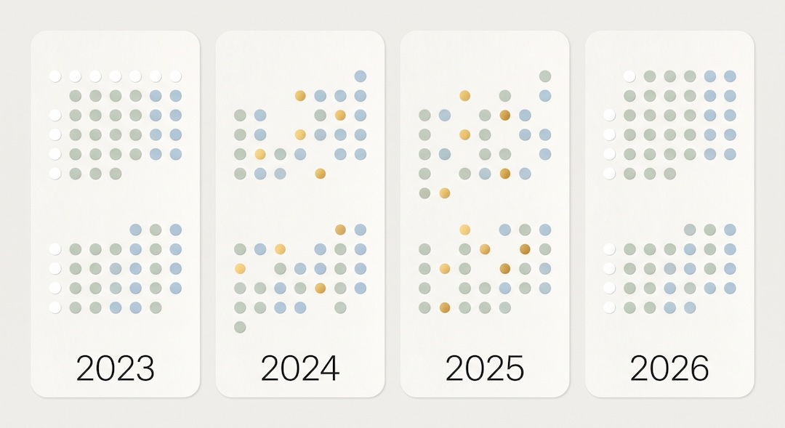
Co naprawdę wykazało badanie z Korei Południowej?
Wykazało korelację, nie przyczynę, i sami autorzy tak to nazwali. Zespół z Seulu przeanalizował dane 8 407 849 osób z koreańskiego ubezpieczenia zdrowotnego z lat 2021 do 2023. Po dopasowaniu metodą propensity score w proporcji jeden do czterech do analizy weszło 595 007 osób nieszczepionych i 2 380 028 zaszczepionych. Okno obserwacji: jeden rok.
Liczby są konkretne, więc podajemy je bez zaokrąglania w dół. Współczynniki ryzyka HR po roku od szczepienia: tarczyca 1,35 (95% CI 1,21 do 1,51), żołądek 1,34 (1,13 do 1,58), jelito grube 1,28 (1,12 do 1,47), płuco 1,53 (1,25 do 1,87), pierś 1,20 (1,07 do 1,34), prostata 1,69 (1,35 do 2,11). Dla samych preparatów mRNA istotny wzrost dotyczył tarczycy, jelita grubego, płuca i piersi.
| Nowotwór | HR (95% CI) | Co to znaczy dosłownie | Czego to nie znaczy |
|---|---|---|---|
| Tarczyca | 1,35 (1,21 do 1,51) | W ciągu roku rozpoznano ją częściej u zaszczepionych | Że szczepionka ją wywołała; Korea ma masowe USG szyi i udokumentowaną nadrozpoznawalność |
| Prostata | 1,69 (1,35 do 2,11) | Najwyższy zaobserwowany współczynnik w tej pracy | Że guz powstał w ciągu roku; rak prostaty rośnie latami i wykrywa go badanie PSA |
| Płuco | 1,53 (1,25 do 1,87) | Istotny wzrost także dla preparatów mRNA | Wyniku niezależnego od palenia; danych o paleniu w tej bazie nie było |
| Pierś | 1,20 (1,07 do 1,34) | Najsłabszy z istotnych sygnałów | Że to nie efekt mammografii; Korea prowadzi krajowy program przesiewowy |
Teraz rzecz, którą trzeba powiedzieć jasno, bo zmienia ciężar tej publikacji. To nie jest pełny artykuł oryginalny, tylko Correspondence, czyli krótka forma listu do redakcji. A 22 października 2025 czasopismo dopisało nad tekstem notę, że do redakcji zgłoszono zastrzeżenia do tej pracy i że działania redakcyjne zostaną podjęte po zakończeniu wyjaśnień. Nota wisi tam do dziś. Autorzy zadeklarowali brak finansowania zewnętrznego i brak konfliktu interesów.
Czy to znaczy, że wyniki są zmyślone? Nie. Znaczy, że nie są jeszcze rozliczone. I że każdy, kto cytuje tę pracę jako dowód, powinien tę notę cytować razem z nią. W obie strony.
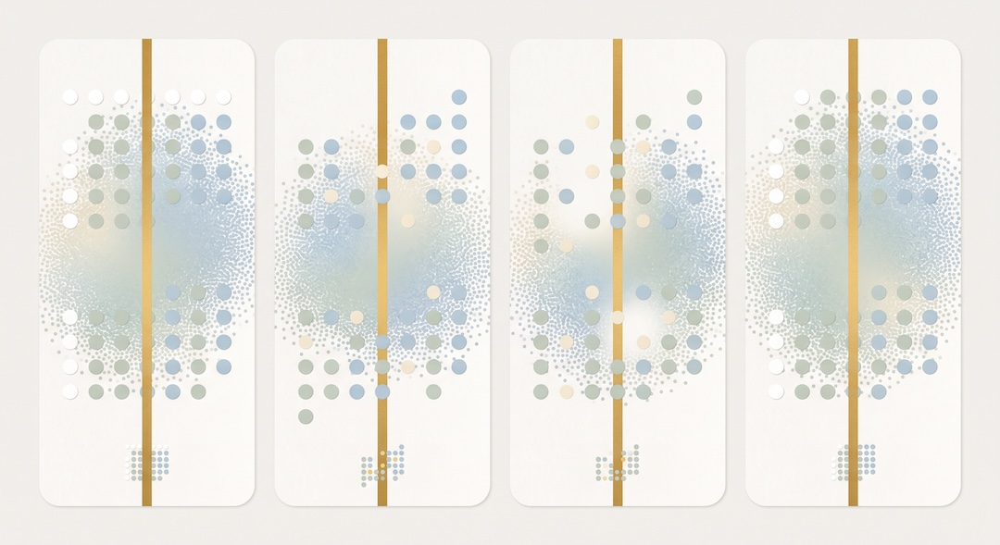
Dlaczego duża próba nie oznacza dobrego dowodu?
Bo liczebność zmniejsza przypadkowy szum, ale nie rusza błędu systematycznego. Jeśli linijka jest krzywa, to zmierzenie nią stołu osiem milionów razy nie wyprostuje wyniku, tylko da Ci bardzo precyzyjną złą liczbę z bardzo wąskim przedziałem ufności. I właśnie ta wąskość robi wrażenie wiarygodności.
W marcu 2026 sześcioro badaczy z Belgii opublikowało w Frontiers in Public Health formalny komentarz metodologiczny do koreańskiej pracy. Wypunktowali konkretne problemy konstrukcyjne, a nie ogólne wątpliwości.
Różne daty startu. Grupa zaszczepiona miała datę indeksową równą dacie szczepienia, a nieszczepiona sztywną datę 1 stycznia 2022. To znaczy, że obie grupy obserwowano w innych okresach kalendarzowych, w których wyjściowe ryzyko rozpoznania nowotworu było różne, niezależnie od szczepionki.
Błąd wykrywalności. Osoby zaszczepione częściej korzystają z ochrony zdrowia. Korea prowadzi krajowe programy przesiewowe dla tarczycy, piersi, żołądka i jelita grubego. To dokładnie te cztery lokalizacje, które w tej pracy wyszły dodatnio. Trudno o bardziej wymowną zbieżność.
Brak korekty na wielokrotne porównania. Wykonano 30 analiz dla poszczególnych lokalizacji i podgrup bez poprawki statystycznej. Przy takiej liczbie testów część wyników wychodzi istotna czystym przypadkiem. W tej samej pracy w podgrupie po dawce przypominającej wyszła też pozorna ochrona przed białaczką. Nikt nie twierdzi, że szczepionka leczy białaczkę, i to jest właśnie dowód, że część tych sygnałów to szum.
Nieuwzględnione czynniki. Brak danych o paleniu, alkoholu, chorobach współistniejących, obciążeniu rodzinnym, podatności genetycznej i częstości badań przesiewowych. Do tego 77,22 procent uczestników w obu grupach przeszło wcześniej zakażenie SARS-CoV-2, a analizy wykluczającej te osoby nie zrobiono, choć samo zakażenie jest rozważane jako czynnik onkogenny.
Wniosek komentarza w skali GRADE: dowody niskiej jakości. Rekomendacja: powtórna analiza w schemacie emulacji badania docelowego, z wykluczeniem rozpoznań z pierwszych 6 do 12 miesięcy i obserwacją co najmniej dziesięcioletnią.
Dla porządku, bo obiecaliśmy jawność w obie strony: jeden ze współautorów komentarza deklaruje honoraria od kilkunastu firm farmaceutycznych, w tym Roche i Gedeon Richter, poza tematem pracy. Zespół nie otrzymał finansowania na ten komentarz. Oceń to sam, ale oceniaj tak samo po obu stronach sporu.
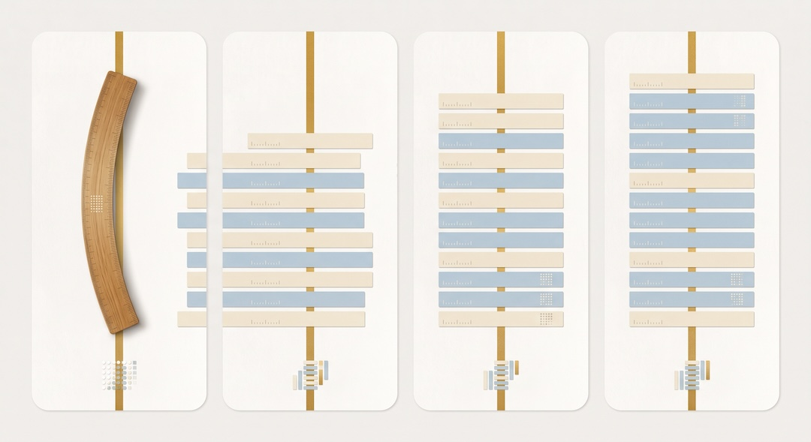
Jak powstaje rak i ile zwykle trwa jego rozwój?
Rak nie zaczyna się od jednego pstryknięcia. To proces wielostopniowy: komórka musi zebrać kolejne uszkodzenia w genach kontrolujących podział, naprawę DNA i obumieranie, potem obejść nadzór immunologiczny, przekonać otoczenie do zbudowania jej naczyń krwionośnych, a na końcu urosnąć do rozmiaru, który w ogóle da się zobaczyć w badaniu.
Każdy z tych etapów zajmuje czas i to jest sedno sporu o rok obserwacji. Zanim guz lity stanie się widoczny w tomografii czy USG, musi rozrosnąć się z pojedynczych zmienionych komórek do zmiany o wymiarze milimetrowym lub większym. Autorzy komentarza metodologicznego stwierdzają wprost, że powstanie guza litego w ciągu roku od ekspozycji nie wydaje się biologicznie prawdopodobne, i z tego powodu rekomendują obserwacje co najmniej dziesięcioletnie.
Warto tu rozdzielić dwie rzeczy, bo w internecie idą jednym workiem. Inicjacja to pierwsze uszkodzenie genetyczne. Promocja i progresja to rozrost i przyspieszenie czegoś, co już istnieje. Czynnik, który tylko promuje, może działać szybciej niż czynnik, który inicjuje, ale wtedy nie tworzy nowego raka, tylko wywołuje z ukrycia stary. To zupełnie inne twierdzenie i wymaga zupełnie innego dowodu.
Co z tego masz po pięćdziesiątce: jeśli guz wykryto u Ciebie kilka miesięcy po szczepieniu, to niemal na pewno rósł już wtedy, gdy szedłeś na tę dawkę. Ta świadomość nie jest pocieszeniem, ale zmienia pytanie, które warto zadać lekarzowi, z: co mi zrobiła szczepionka, na: od jak dawna to rosło i czy da się cofnąć zaległości w badaniach.
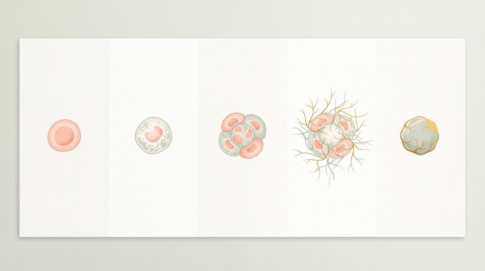
Czy roczny okres obserwacji może wykazać wywołanie nowego raka?
Nie w przypadku guzów litych. Może wykazać coś innego i to warto umieć nazwać: różnicę w tempie wykrywania. Rok to okno, w którym zdąży się zrobić kolonoskopię, mammografię i USG tarczycy, ale nie zdąży się urosnąć nowy rak jelita grubego od zera.
Dlatego w epidemiologii stosuje się okres karencji, po angielsku lag time. Wyrzuca się z analizy rozpoznania z pierwszych miesięcy po ekspozycji, bo one prawie na pewno dotyczą choroby już istniejącej. I tu mamy najciekawszy eksperyment naturalny w całym tym sporze.
Włoski zespół z Pescary zrobił dokładnie to. Przy karencji 180 dni ryzyko hospitalizacji z powodu nowotworu u osób po co najmniej jednej dawce wynosiło HR 1,23 (1,11 do 1,37). Przy karencji 365 dni ten związek przestał być istotny statystycznie, a u osób po co najmniej trzech dawkach odwrócił się na HR 0,90 (0,83 do 0,98), czyli niższe ryzyko niż u nieszczepionych.
| Karencja | Po jednej dawce lub więcej | Po trzech dawkach lub więcej | Interpretacja |
|---|---|---|---|
| 90 dni | Bez istotnych różnic wobec analizy podstawowej | Bez istotnych różnic | Okno zdominowane przez wykrywanie istniejącej choroby |
| 180 dni (analiza główna) | HR 1,23 (1,11 do 1,37) | HR 1,09 (1,02 do 1,16) | Sygnał obecny, ale wciąż w oknie wykrywalności |
| 365 dni | Związek nieistotny statystycznie | HR 0,90 (0,83 do 0,98) | Sygnał znika, przy trzech dawkach odwraca się kierunek |
To jest podręcznikowy odcisk palca błędu wykrywalności. Prawdziwy efekt rakotwórczy zachowuje się odwrotnie: im dłużej czekasz, tym wyraźniej go widać, bo nowotwory potrzebują czasu, żeby się ujawnić. Tu jest na odwrót. Efekt jest najsilniejszy tuż po ekspozycji i rozpuszcza się z czasem, czyli zachowuje się jak wzmożone patrzenie, a nie jak kancerogen.
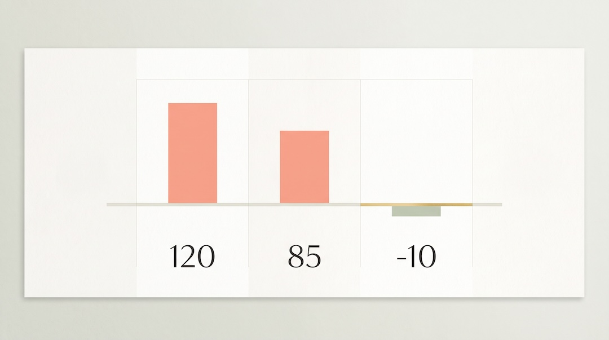
Czy mRNA może zmienić Twoje DNA?
Nie ma jak. I to akurat jest ten fragment tematu, gdzie dowody są mocne, a nie umiarkowane. Powód jest architektoniczny: Twoje DNA leży w jądrze komórkowym, a mRNA ze szczepionki tam nie wchodzi. Pracuje w cytoplazmie, na rybosomach, dokładnie tam, gdzie pracuje każde inne mRNA, które Twoje komórki produkują non stop przez całe życie.
Żeby RNA przepisać na DNA, trzeba enzymu zwanego odwrotną transkryptazą. Europejska Agencja Leków stwierdza wprost, że tego enzymu nie ma standardowo w ludzkich komórkach ani w preparacie szczepionkowym. Dodatkowo RNA ma inny skład chemiczny niż DNA, co samo w sobie uniemożliwia mu bezpośrednie wpięcie się w nić DNA.
Metafora i jej rzeczywisty odpowiednik. Wyobraź sobie, że DNA to oryginał przepisu zamknięty w sejfie w archiwum, a mRNA to kartka z odręczną kopią jednego przepisu, wyniesiona do kuchni. Kucharz gotuje z kartki, kartka się zużywa i ląduje w koszu. Sejfu nikt nie otwierał. Biologicznie: transkrypcja DNA na mRNA zachodzi w jądrze i tylko tam, translacja mRNA na białko zachodzi w cytoplazmie, a mRNA jest rozkładane przez rybonukleazy komórkowe. Kierunek DNA do RNA do białka nie odwraca się sam.
Uwaga na precyzję, bo tu wielu wpada. Nie piszemy: to jest fizycznie niemożliwe. Piszemy: nie wykazano tego w dostępnych danych, a znany mechanizm biochemiczny mówi, że nie ma po co tego oczekiwać. Zmiana aktywności genu, na przykład przez metylację DNA, nie jest zmianą samej sekwencji DNA. Różnica jest istotna i to właśnie na niej żerują przekazy typu przecież nauka nigdy nie mówi nigdy.
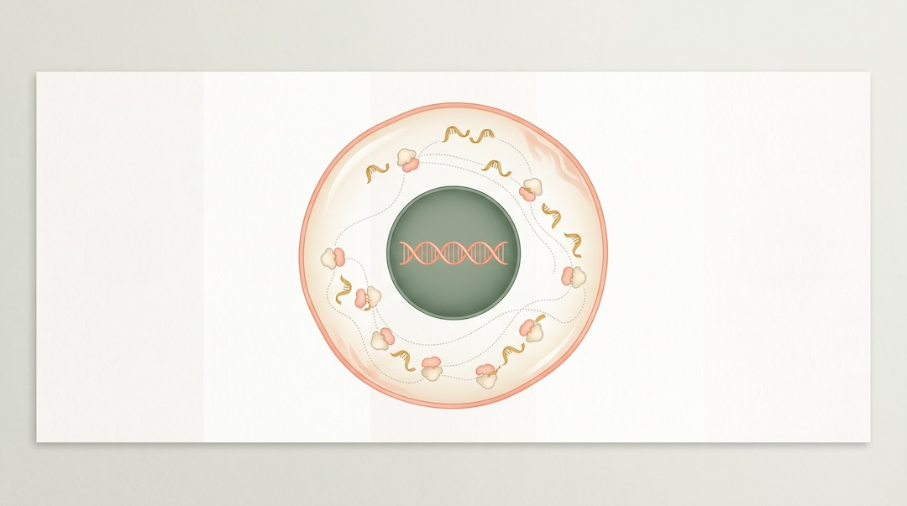
Co wiadomo o lipidowych nanocząsteczkach i biodostępności?
Lipidowe nanocząsteczki to mikroskopijne pęcherzyki tłuszczowe, które opakowują mRNA i przeprowadzają je przez błonę komórkową. Bez nich mRNA rozpadłoby się, zanim cokolwiek zdąży zrobić. To nie jest technologia wymyślona na COVID: pierwszy lek wykorzystujący nanocząsteczki lipidowe dopuszczono w Unii Europejskiej w 2018 roku.
Gdzie trafiają. Według danych z badań na zwierzętach, opisanych w dokumentacji rejestracyjnej obu preparatów, mRNA i nanocząsteczki zostają głównie w miejscu wstrzyknięcia i w okolicznych węzłach chłonnych. Niewielkie ilości docierają do innych tkanek, przede wszystkim wątroby, ale też śledziony, serca, nerek, płuc i mózgu. Poziomy mRNA spadały w ciągu 6 do 9 dni po podaniu. Samo białko kolca wykrywano w mięśniu i węzłach chłonnych, a dla preparatu Moderny także w śledzionie. W płucach, sercu i mózgu go nie wykryto.
Jak długo. Tu nie ma sensu wygładzać: dłużej, niż mówiono na początku. Zespół rumuński wykrył szczepionkowe mRNA we krwi jeszcze 15 dni po podaniu. Praca opublikowana w Cell w 2022 roku pokazała mRNA i antygen kolca w ośrodkach rozmnażania pachowych węzłów chłonnych do 60 dni po drugiej dawce. To realne obserwacje z recenzowanych czasopism i nie ma powodu ich chować.
Co z tego wynika i czego nie. Wynika, że okno biologicznej aktywności jest liczone w tygodniach, nie w godzinach, i że ocena związków przyczynowych powinna to okno uwzględniać. Nie wynika, że mRNA gdzieś się kumuluje na stałe, ani że białko kolca krąży latami. To dwie różne rzeczy i zwykle właśnie na tym przejściu przekaz się rozjeżdża.
Praktyczna konsekwencja, o której warto wiedzieć przed badaniem obrazowym: powiększone węzły chłonne pod pachą po stronie szczepienia są normalną reakcją i potrafią się zaświecić w PET czy USG. Amerykański National Cancer Institute zaleca uprzedzić o niedawnym szczepieniu zespół prowadzący, żeby nie odczytano tego jako wznowy.
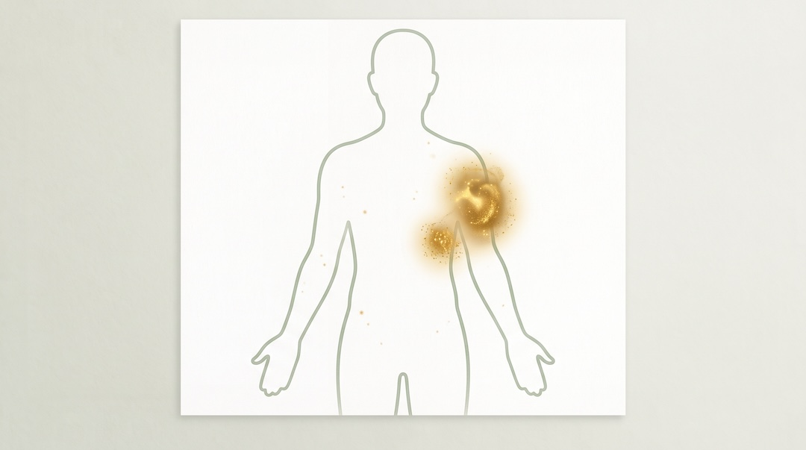
Co z pozostałościami DNA w preparatach?
Pozostałości DNA w tych preparatach faktycznie występują i nikt tego nie ukrywa. Wynika to z metody produkcji: mRNA przepisuje się z matrycy plazmidowego DNA, a potem tę matrycę się rozkłada i usuwa. W biotechnologii nigdy nie usuwa się czegoś do zera, więc regulatorzy nie wymagają zera, tylko ustalają limit. Dla tych preparatów wynosi on 10 nanogramów na dawkę.
W grudniu 2025 w npj Vaccines ukazała się analiza 15 serii preparatów Comirnaty i Spikevax, pobranych z oficjalnych zasobów pod nadzorem słowackiego urzędu kontroli leków. Zbadano je czterema niezależnymi metodami: qPCR, fluorymetrią, elektroforezą kapilarną i sekwencjonowaniem DNA. We wszystkich seriach ilość pozostałego DNA mieściła się poniżej dopuszczalnego limitu, a wykryty materiał to krótkie fragmenty pochodzące z matrycy transkrypcyjnej. Stosunek DNA do mRNA w poszczególnych seriach wynosił od ponad 1 do 3300 aż do 1 do 30 000.
Istnieją też publikacje raportujące znacznie wyższe wartości. Europejska Agencja Leków ocenia, że opierają się one na metodach niewalidowanych, w których inne składniki preparatu zakłócają pomiar, i deklaruje brak dowodów łączących pozostałe DNA z działaniami niepożądanymi. To jest spór metodologiczny o to, jak w ogóle mierzyć DNA w mieszaninie zawierającej ogromny nadmiar RNA i lipidów, a nie spór o to, czy ktoś coś ukrywa.
Osobno bywa podnoszony wątek fragmentu promotora SV40. Warto wiedzieć, że fragment sekwencji regulatorowej to nie to samo co żywy wirus SV40, i że badania osób szczepionych przeciw polio preparatami zanieczyszczonymi SV40 w latach 1955 do 1963 nie wykazały u nich zwiększonego ryzyka nowotworów, choć Instytut Medycyny uznał te badania za zbyt słabe metodologicznie, by kwestię ostatecznie rozstrzygnąć. Tak wygląda uczciwy stan wiedzy: brak sygnału przy niedoskonałych narzędziach.
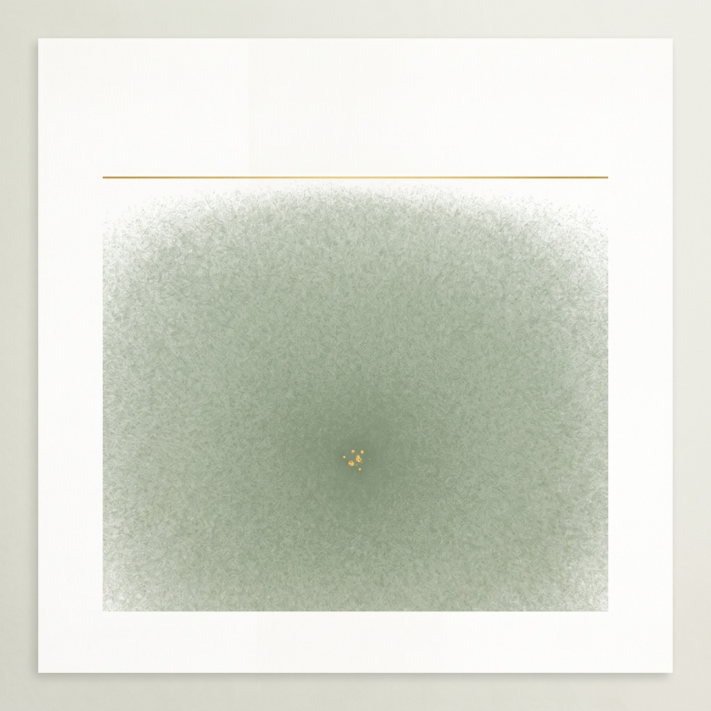
Czy istnieje biologicznie wiarygodny mechanizm pronowotworowy?
Genotoksyczny nie. Niegenotoksyczny hipotetycznie tak i to trzeba powiedzieć głośno, zamiast udawać, że pytanie nie istnieje. W grudniu 2025 w czasopiśmie Cancers ukazał się przegląd poświęcony dokładnie temu. Jego autor, jednoosobowo, formułuje wniosek dwuczęściowy: wywołanie nowego raka przez uszkodzenie genów w krótkim czasie jest skrajnie mało prawdopodobne, ale efekty pronowotworowe bez uszkadzania DNA pozostają teoretycznie możliwe.
Jakie konkretnie. Zaburzenie nadzoru immunologicznego, zapalenie w mikrośrodowisku guza, zaburzenie autofagii i szlaków białek supresorowych oraz pobudzenie sygnałów odpowiedzialnych za podział i migrację komórek. Sumaryczny scenariusz w tej hipotezie brzmi: nie powstanie nowego guza, lecz obudzenie i szybszy wzrost uśpionych mikroguzów u osób szczególnie podatnych, wystawionych w krótkim czasie na wielokrotne zakażenia i wielokrotne szczepienia.
Co znaczy uśpiona komórka nowotworowa. To komórka, która przetrwała leczenie albo oderwała się od guza pierwotnego i utknęła gdzieś w organizmie, nie dzieląc się. Trzyma ją w ryzach układ odpornościowy i lokalne otoczenie tkankowe, czyli mikrośrodowisko. Jeśli ta równowaga się zachwieje, komórka może ruszyć. To nie jest teoria spiskowa, tylko normalna wiedza onkologiczna: dokładnie dlatego po leczeniu raka piersi chodzi się na kontrole przez dziesięć lat, a nie przez rok.
Co znaczy IgG4 i immunosupresja. Po wielokrotnych dawkach preparatów mRNA opisano przesunięcie odpowiedzi przeciwciał w stronę podklasy IgG4, która ma słabsze właściwości prozapalne. Hipoteza mówi, że taka zmiana mogłaby osłabiać reakcję na komórki nowotworowe. Status: obserwacja immunologiczna, której konsekwencje kliniczne dla onkologii nie zostały u ludzi wykazane. Ani w jedną, ani w drugą stronę.
| Hipotetyczny mechanizm | Dowód laboratoryjny | Dowód u ludzi | Aktualny status |
|---|---|---|---|
| Integracja mRNA z DNA | Brak; wymaga odwrotnej transkryptazy | Brak | Odrzucony na poziomie mechanizmu |
| Genotoksyczność pozostałości DNA | Fragmenty poniżej limitu regulacyjnego w 15 przebadanych seriach | Brak | Brak dowodów; spór dotyczy metod pomiaru |
| Zapalenie w mikrośrodowisku guza | Modele komórkowe i zwierzęce | Brak danych klinicznych rozstrzygających | Hipoteza otwarta |
| Osłabienie nadzoru immunologicznego, przesunięcie ku IgG4 | Obserwacje immunologiczne u ludzi | Brak przełożenia na twarde punkty końcowe w onkologii | Hipoteza otwarta |
| Obudzenie uśpionych mikroprzerzutów | Modele biologii nowotworu | Brak badania zaprojektowanego, żeby to sprawdzić | Najpoważniejsza otwarta luka |
| Pobudzenie odporności przeciwnowotworowej (kierunek odwrotny) | Modele zwierzęce, interferon typu I | Retrospektywne dane u chorych na immunoterapii | Hipoteza otwarta, badana w planowanym badaniu randomizowanym |
Zwróć uwagę na ostatni wiersz. Ta sama biologia, która stoi za hipotezą obudzenia guza, jest jednocześnie podstawą hipotezy, że silna stymulacja interferonem typu I pomaga układowi odpornościowemu zaatakować raka. Nie da się wybrać sobie tylko tej połowy mechanizmu, która pasuje do tezy.
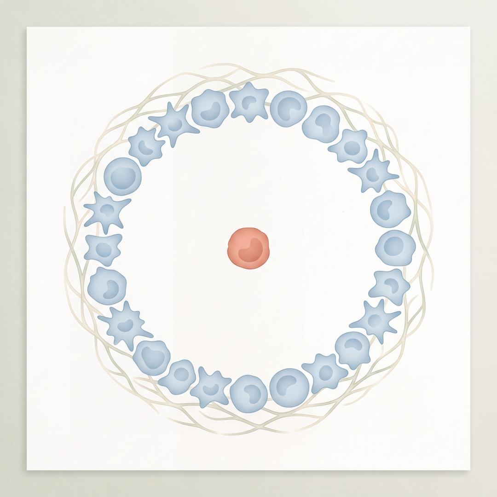
Co mówią rejestry i inne badania populacyjne?
Mówią rzeczy niespójne i to jest najuczciwsza odpowiedź. Poza pracą koreańską mamy w zasadzie jedno drugie badanie porównujące wprost zaszczepionych z nieszczepionymi pod kątem nowotworów: włoską kohortę z prowincji Pescara, 296 015 mieszkańców od 11. roku życia, obserwowanych do 30 miesięcy.
Co tam wyszło. Po co najmniej jednej dawce ryzyko hospitalizacji z powodu nowotworu było wyższe, HR 1,23 (1,11 do 1,37), a po trzech dawkach HR 1,09 (1,02 do 1,16). Dla poszczególnych lokalizacji: pierś HR 1,54 (1,10 do 2,16), pęcherz moczowy HR 1,62 (1,07 do 2,45), jelito grube HR 1,34 (1,00 do 1,80). Dla płuca, jajnika i tarczycy nie znaleziono związku, a preparat mRNA-1273 jako jedyny nie wykazał związku z ogólną liczbą hospitalizacji onkologicznych.
Teraz porównaj to z Koreą. Tam istotne były tarczyca i płuco, we Włoszech nie. We Włoszech istotny był pęcherz moczowy, w Korei ta lokalizacja się nie pojawia. Prawdziwy efekt biologiczny preparatu podanego identycznie w obu krajach nie powinien wybierać sobie innych narządów po drugiej stronie świata. Rozbieżność wzorca lokalizacji to mocna przesłanka, że patrzymy na artefakty lokalnych systemów ochrony zdrowia, a nie na farmakologię.
I najważniejsza liczba z tej samej pracy, którą przekazy internetowe zwykle pomijają: śmiertelność ogólna. Osoby po co najmniej jednej dawce HR 0,42 (0,39 do 0,44), po trzech dawkach HR 0,65 (0,62 do 0,67). Autorzy sami tłumaczą, że tak duża różnica jest częściowo efektem zdrowego szczepionego, czyli tego, że osoby szczepiące się są generalnie zdrowsze i bardziej zaradne zdrowotnie. Ale ten sam mechanizm działa też w drugą stronę: ci sami ludzie chodzą częściej na badania i częściej dostają diagnozę onkologiczną.
Autorzy włoskiej pracy nazywają swoje wyniki wstępnymi, dodali do niej erratę i prowadzą na łamach czasopisma trwającą wymianę listów z grupą badaczy kwestionujących ich analizę. To wygląda dokładnie tak, jak powinien wyglądać żywy spór naukowy, i to jest argument za czytaniem całej teczki, a nie jednego nagłówka.
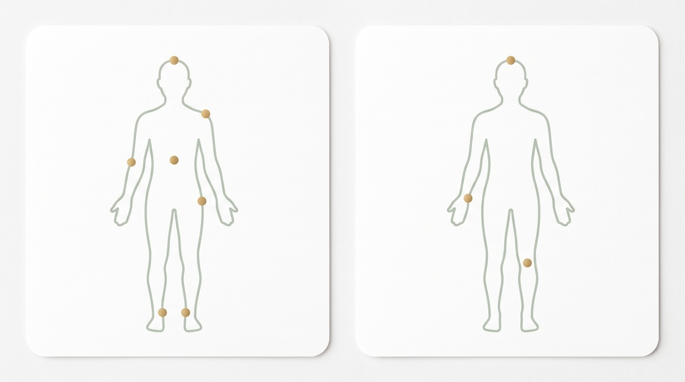
Co znaczą opisy pojedynczych przypadków?
Znaczą: przyjrzyjcie się temu. Nie znaczą: to się potwierdziło. Opis przypadku to najniższy szczebel drabiny dowodowej, ale jest niezbędny, bo od niego zaczyna się wykrywanie sygnałów bezpieczeństwa. Problem zaczyna się wtedy, gdy ktoś przeskakuje z pierwszego szczebla od razu na ostatni.
Najgłośniejszy taki opis pochodzi z 2021 roku: szybka progresja chłoniaka angioimmunoblastycznego z komórek T po dawce przypominającej. Autor, sam będąc pacjentem, opisał własny przypadek. Później publicznie tłumaczył, że była to hipoteza, a nie wniosek, że szczepionki uratowały miliony ludzi i że właśnie dlatego trzeba dalej badać ich rzadkie skutki, zwłaszcza w onkologii. Jego praca została mimo to przejęta przez przekazy, których nigdy nie autoryzował.
W styczniu 2026 w Oncotarget ukazał się przegląd zbierający takie doniesienia: 69 publikacji, w tym 66 opisów obejmujących łącznie 333 pacjentów z 27 krajów, plus dwie wspomniane analizy populacyjne. Autorzy wskazują powtarzające się motywy: nietypowo szybka progresja lub wznowa choroby wcześniej stabilnej, zmiany w miejscu wstrzyknięcia lub w regionalnych węzłach chłonnych, oraz hipotezy dotyczące uśpienia guza i ucieczki spod nadzoru immunologicznego. I sami piszą, że to wczesna faza wykrywania sygnału, a praca ma charakter generujący hipotezy.
Dwie rzeczy, które trzeba dopowiedzieć przy tej publikacji. Jedna z osób podpisanych pod tym przeglądem jest redaktorem naczelnym czasopisma, w którym go opublikowano. I druga: 333 pacjentów z 27 krajów, przy miliardach podanych dawek, to zbiór bez mianownika. Nie wiemy, ilu podobnych przypadków wystąpiło u nieszczepionych w tym samym czasie, bo nikt takiej grupy porównawczej nie zebrał. Bez mianownika nie da się policzyć ryzyka, można tylko zebrać historie.
Jak taki sygnał należy prawidłowo zweryfikować: zebrać zgłoszenia, sprawdzić, czy jest ich więcej niż oczekiwano na tle historycznym, poszukać zależności od dawki i od czasu, potem przejść do danych rejestrowych z grupą kontrolną i okresem karencji, na końcu poszukać mechanizmu w laboratorium. Przy nowotworach ta ścieżka trwa lata i nie ma na to skrótu.
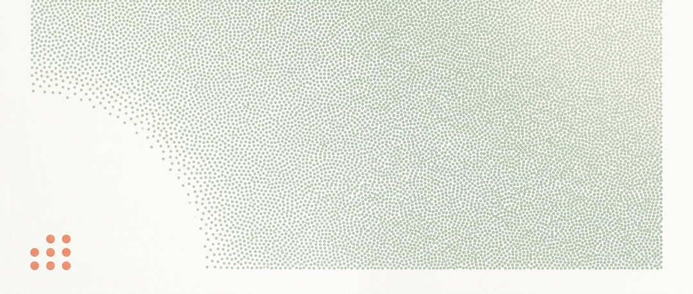
Czym jest turbo rak?
To określenie z internetu, nie z medycyny. Nie znajdziesz go w klasyfikacji chorób, w wytycznych onkologicznych ani w opisie histopatologicznym. W polskiej przestrzeni publicznej rozeszło się na przełomie 2023 roku i od tego czasu wraca regularnie. Organizacje zajmujące się komunikacją zdrowotną wskazują, że termin ukuli przeciwnicy szczepień i że nie jest uznawany przez onkologów ani immunologów za opis realnego, odrębnego zjawiska.
To nie znaczy, że ludzie, którzy go używają, wymyślają sobie problem. Pod jednym hasłem zlepiło się co najmniej sześć różnych rzeczy i część z nich jest jak najbardziej realna.
| Zjawisko | Czy jest realne | Co je wyjaśnia |
|---|---|---|
| Nowotwory biologicznie agresywne, rosnące w tygodniach | Tak, znane od dziesięcioleci | Niektóre chłoniaki, drobnokomórkowy rak płuca, rak trzustki; opisywane długo przed pandemią |
| Diagnozy w wyższym stadium po 2021 roku | Tak, udokumentowane | Przerwane i opóźnione badania przesiewowe w latach 2020 i 2021 |
| Wzrost liczby rozpoznań u osób młodszych | Tak, obserwowany | Trend widoczny także przed pandemią; przyczyny badane, niewyjaśnione |
| Wpływ samego zakażenia SARS-CoV-2 | Hipoteza w badaniach | Rozważana niezależnie od szczepionek, bez rozstrzygnięcia |
| Pojedyncze przypadki po szczepieniu | Opisane w literaturze | Związek czasowy, bez wykazanej przyczynowości, bez mianownika |
| Nowa, odrębna jednostka chorobowa wywołana szczepionką | Nie wykazano | Brak dowodu populacyjnego i brak definicji klinicznej |
Dlaczego ta obawa jest zrozumiała. Jeśli ktoś w Twoim otoczeniu usłyszał diagnozę w czwartym stadium czegoś, co dwa lata wcześniej miałoby szansę być wykryte wcześnie, to on naprawdę zetknął się z gorszym scenariuszem niż przed pandemią. Ludzie nie wymyślili tego doświadczenia. Dostali tylko złe wyjaśnienie: takie, które wskazuje jedną przyczynę zamiast rozłożonego w czasie zapaści systemu profilaktyki.
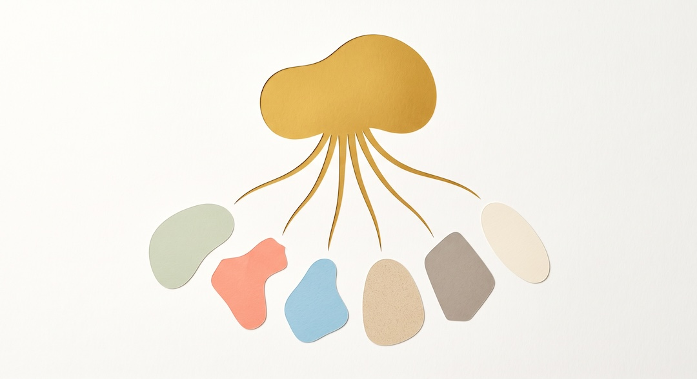
Czy szczepienie może wpłynąć na już istniejący nowotwór?
To jedyne pytanie z całego zestawu, na które uczciwa odpowiedź brzmi: nie wiemy, a dane, które mamy, idą w dwie przeciwne strony naraz. Nie da się tego wygładzić i nie zamierzamy tego robić, bo to akurat jest miejsce, w którym uproszczenie w którąkolwiek stronę byłoby zwykłym oszustwem wobec czytelnika.
Kierunek pierwszy: teoretyczne obawy. Silna stymulacja immunologiczna, zapalenie i przejściowe zmiany w mikrośrodowisku mogłyby w hipotezie zaburzyć równowagę trzymającą uśpione komórki w ryzach. To hipoteza opisana w recenzowanym piśmiennictwie, oparta na modelach, bez potwierdzenia u ludzi.
Kierunek drugi, znacznie mniej znany, a oparty na twardszych danych: w październiku 2025 w Nature opublikowano analizę ponad tysiąca pacjentów leczonych w MD Anderson w latach 2019 do 2023. U chorych na zaawansowanego niedrobnokomórkowego raka płuca, którzy dostali szczepionkę mRNA w ciągu 100 dni od rozpoczęcia immunoterapii inhibitorem punktu kontrolnego, mediana przeżycia całkowitego wyniosła 37,3 miesiąca wobec 20,6 miesiąca u niezaszczepionych. Przeżycie trzyletnie: 55,7 procent wobec 30,8 procent. Podobny kierunek zaobserwowano w czerniaku przerzutowym.
Zanim to podchwycisz jako dowód w drugą stronę: to badanie retrospektywne, czyli obarczone dokładnie tymi samymi ograniczeniami, o które słusznie ma się pretensje do pracy koreańskiej. Opublikowano już analizę kwestionującą wielkość tego efektu po zastosowaniu emulacji badania docelowego. Projektowane jest randomizowane badanie III fazy, które ma to rozstrzygnąć.
Wniosek jest niewygodny dla obu obozów: ta sama biologia jest cytowana jako powód, żeby się bać, i jako powód, żeby mieć nadzieję. Właśnie tak wygląda hipoteza, której nikt jeszcze nie sprawdził jak należy.
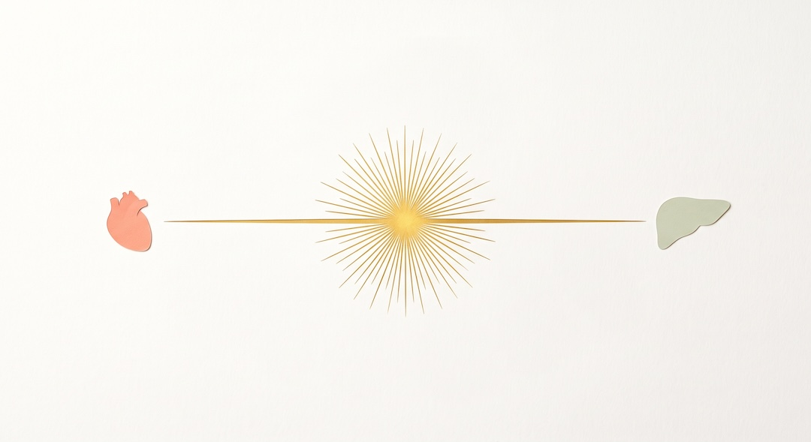
Co wiadomo o szczepieniach u osób leczonych onkologicznie?
Tu akurat wytyczne są jednoznaczne i od lat stabilne. Amerykański National Cancer Institute stwierdza wprost, że nie ma dowodów, by szczepionki przeciw COVID-19 powodowały raka, prowadziły do wznowy albo do progresji choroby, ani żeby osłabiały skuteczność leczenia onkologicznego.
Praktyczne zastrzeżenia, które faktycznie obowiązują i warto je znać. Po przeszczepie komórek macierzystych lub terapii CAR-T zaleca się odroczenie szczepienia o co najmniej trzy miesiące od zakończenia leczenia, bo w okresie najgłębszej immunosupresji szczepionki po prostu słabo działają. Przed planowaną operacją onkologiczną zaleca się odstęp od kilku dni do dwóch tygodni, żeby dało się odróżnić gorączkę pooperacyjną od odczynu poszczepiennego. Przy obrzęku limfatycznym lub po usunięciu węzłów pachowych szczepi się w drugie ramię, a przy obustronnym obrzęku alternatywą jest udo.
Trzeba też powiedzieć, czego szczepionka w tej grupie nie zrobi. U części chorych, zwłaszcza z nowotworami układu krwiotwórczego i w trakcie agresywnej chemioterapii, odpowiedź na szczepienie jest słabsza niż w populacji ogólnej. Ochrona jest, ale mniejsza, i dlatego dla tych osób nadal ma znaczenie unikanie tłumów i szczepienie domowników.
Jedna uwaga porządkowa, którą sami sobie robimy: strona NCI, z której pochodzą te zalecenia, była aktualizowana w październiku 2023, czyli przed publikacją badania koreańskiego. Nie znaczy to, że jest błędna, ale znaczy, że nie odnosi się do najnowszego sporu. Podajemy to, żeby nikt nie musiał tego wyłapywać za nas.
Jak odróżnić sygnał od dowodu?
Po tym, ile alternatywnych wyjaśnień zostało wykluczonych. Sygnał to obserwacja, która zasługuje na sprawdzenie. Dowód przyczynowy to obserwacja, po której nie zostało już żadne sensowne wyjaśnienie poza tym jednym. Między jednym a drugim leży cała robota metodologiczna i to właśnie ją internet przeskakuje.
| Zjawisko | Co to dokładnie znaczy | Czy tu występuje |
|---|---|---|
| Powstanie nowego raka | Zdrowa komórka staje się nowotworową po ekspozycji | Nie wykazano; okno czasowe biologicznie nieprawdopodobne |
| Wykrycie raka, który już był | Diagnoza choroby obecnej przed ekspozycją | Tak, to najlepsze wyjaśnienie sygnałów z Korei i Włoch |
| Wznowa | Powrót choroby po okresie remisji | Nie wykazano związku ze szczepieniem |
| Przyspieszenie istniejącej choroby | Szybsza progresja czegoś, co już rosło | Hipoteza otwarta, bez danych rozstrzygających u ludzi |
| Pojedynczy przypadek po szczepieniu | Jedna osoba, jedno zdarzenie, brak grupy porównawczej | Tak, opisane w literaturze |
| Sygnał bezpieczeństwa | Wzorzec zgłoszeń wymagający formalnego sprawdzenia | Tak, i właśnie dlatego prowadzone są analizy |
| Korelacja populacyjna | Dwie rzeczy chodzą razem w dużych danych | Tak, w dwóch kohortach obserwacyjnych |
| Potwierdzony związek przyczynowy | Wyjaśnienia alternatywne wykluczone, mechanizm znany | Nie |
| Rodzaj danych | Co może wykazać | Czego nie może wykazać |
|---|---|---|
| Opis przypadku | Że coś się w ogóle wydarzyło; postawić hipotezę | Częstości ani przyczyny |
| Zgłoszenia do systemu nadzoru | Nietypowe skupiska zdarzeń | Ryzyka, bo brak mianownika i zgłasza się wybiórczo |
| Kohorta obserwacyjna | Związek statystyczny po korekcie na znane czynniki | Przyczynowości, jeśli zostają czynniki nieuwzględnione |
| Kohorta z okresem karencji | Czy związek przeżywa usunięcie efektu wykrywania | Wpływu czynników w ogóle niemierzonych, jak palenie |
| Badanie randomizowane | Efekt przyczynowy w badanym okresie | Skutków odległych, gdy obserwacja trwa krótko |
| Rejestr nowotworów, obserwacja wieloletnia | Zmiany zapadalności w skali populacji | Przypisania zmiany konkretnej osobie |
| Badanie mechanistyczne w laboratorium | Że dana ścieżka biologiczna jest możliwa | Że zachodzi u człowieka w dawce klinicznej |
| Poziom | Pytanie, na które odpowiada | Przykład z tego tematu |
|---|---|---|
| Związek czasowy | Czy B nastąpiło po A? | Diagnoza raka trzy miesiące po dawce |
| Korelacja | Czy A i B występują razem częściej, niż wynikałoby z przypadku? | HR 1,23 dla hospitalizacji onkologicznych w kohorcie z Pescary |
| Przyczynowość | Czy usunięcie A zmieniłoby B? | Brak; sygnał znika przy karencji 12 miesięcy |
Zapamiętaj jedno przełożenie na życie: nie musisz umieć czytać statystyki, żeby zadać właściwe pytanie. Kiedy widzisz nagłówek o badaniu, spytaj: jak długo obserwowano ludzi i co się dzieje z wynikiem, gdy wyrzucimy pierwszy rok? Podobnie przy diagnostyce trzeba odróżniać, co pokazują RTG, tomografia i rezonans, zamiast traktować je jak zamienne testy. Te pytania odsiewają znaczną część szumu.
Granica prawdy: co w tym przekazie jest uzasadnione?
Uzasadnione jest samo pytanie i kilka konkretnych obserwacji, na których się opiera. Przekaz nie jest zbudowany z niczego i udawanie, że jest, to najprostszy sposób, żeby stracić czytelnika, który akurat ma rację w połowie.
Prawdą jest, że dwie duże kohorty obserwacyjne pokazały wyższą liczbę rozpoznań onkologicznych u zaszczepionych. Prawdą jest, że mRNA i białko kolca utrzymują się w węzłach chłonnych dłużej, niż zakładano na początku, bo wykryto je tam do 60 dni po drugiej dawce. Prawdą jest, że w preparatach są mierzalne pozostałości DNA z matrycy. Prawdą jest, że okres obserwacji w badaniach rejestracyjnych był krótki i że danych dziesięcioletnich po prostu jeszcze nie ma. Prawdą jest wreszcie, że pytanie o uśpione mikroprzerzuty nie zostało zbadane.
Granica przebiega dokładnie w miejscu, gdzie te fakty zamieniają się w zdanie: a więc szczepionka daje raka. Każdy z powyższych punktów opisuje możliwość albo obserwację, a nie wykazany skutek. Przeskok robi się dopiero w narracji, nie w danych.
Uzasadniona jest też ostrożność wobec twierdzeń kategorycznych z obu stron. Kto mówi, że to niemożliwe, wychodzi poza dane. Kto mówi, że to udowodnione, wychodzi poza dane jeszcze dalej.
| MIT lub twierdzenie | Fakt i stan dowodów |
|---|---|
| mRNA zmienia ludzkie DNA | Nie wykazano tego; mRNA działa poza jądrem i nie dostarcza mechanizmu potrzebnego do integracji z DNA. |
| Badanie koreańskie dowiodło, że szczepionki powodują raka | Badanie wykazało korelację w rocznym oknie obserwacji. Nie rozstrzyga przyczynowości i ma opisane ograniczenia metodologiczne. |
| Po szczepieniu powstaje turbo rak | Turbo rak nie jest rozpoznaniem medycznym. Pod tą nazwą łączy się różne zjawiska, w tym agresywne nowotwory znane przed pandemią i opóźnione rozpoznania. |
| Wszystkie pytania są już zamknięte | Nie. Brakuje wieloletnich danych oraz badań zaprojektowanych do oceny wznowy u osób po leczeniu onkologicznym. |
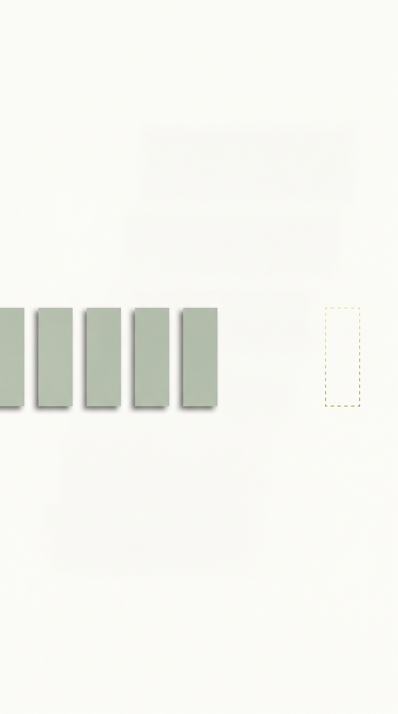
Jak ten przekaz rozszedł się w internecie?
Według schematu, który powtarza się przy każdym temacie zdrowotnym: prawdziwa publikacja, wyrwany fragment, dorobiona konkluzja. W Polsce fala ruszyła pod koniec 2023 roku, gdy opis przypadku chłoniaka po dawce przypominającej zaczął krążyć jako dowód na turbo raka, mimo że jego autor publicznie tłumaczył, iż postawił hipotezę, a nie wniosek.
Latem 2026 przyszła kolejna fala, tym razem oparta na obu omawianych tu badaniach, koreańskim i włoskim, cytowanych razem w postach twierdzących, że amerykańska agencja zdrowia publicznego przyznała, że szczepionki są największą ekspozycją rakotwórczą w historii. Weryfikacja pokazała, że takiego stwierdzenia nie było, a posty odnosiły się prawdopodobnie do prezentacji wyliczającej niepewności i pojedyncze przypadki.
Powtarzalny mechanizm wygląda tak. Krok pierwszy: znajdujesz prawdziwą pracę naukową. Krok drugi: cytujesz jej wynik, ale pomijasz noty redakcyjne, ograniczenia i analizy wrażliwości. Krok trzeci: zamieniasz słowo związek na słowo powoduje. Krok czwarty: dokładasz nazwę instytucji, żeby brzmiało oficjalnie.
Praktyczny test, który zajmuje minutę: wpisz tytuł badania i sprawdź, czy nad tekstem nie wisi nota redakcyjna, oraz czy istnieje opublikowany komentarz metodologiczny. Przy koreańskiej pracy oba te elementy są, i to na stronie samego wydawcy.
Czego nadal uczciwie nie wiemy?
Nie wiemy, jak wygląda zapadalność na nowotwory u zaszczepionych i nieszczepionych po dziesięciu i piętnastu latach, bo tyle jeszcze nie minęło. Każdy, kto dziś twierdzi, że zna odpowiedź na to pytanie, mówi o czymś, czego nie ma w żadnych danych.
Nie wiemy, czy powtarzana silna stymulacja immunologiczna wpływa na uśpione mikroprzerzuty u osób po leczeniu onkologicznym. Nie ma badania zaprojektowanego, żeby to sprawdzić.
Nie wiemy, jaki jest łączny efekt wielokrotnych zakażeń i wielokrotnych szczepień u tej samej osoby w krótkim czasie, bo prawie wszyscy przeszli i jedno, i drugie, co utrudnia rozdzielenie tych wpływów statystycznie. We włoskiej kohorcie wynik był wyraźnie inny u osób z przebytym zakażeniem i bez niego, a w koreańskiej ponad trzy czwarte uczestników w obu grupach miało zakażenie za sobą.
Nie wiemy, jakie jest kliniczne znaczenie przesunięcia odpowiedzi przeciwciał w stronę IgG4 po wielokrotnych dawkach.
Nie wiemy wreszcie, czy efekt zaobserwowany u chorych na immunoterapii jest prawdziwy, czy jest artefaktem doboru pacjentów. Ta niepewność działa symetrycznie: dotyczy dobrej wiadomości dokładnie tak samo jak złej.
Jakie badanie mogłoby tę kwestię rozstrzygnąć?
Takie, które połączy rejestr nowotworów z rejestrem szczepień i z danymi o stylu życia, na dużej populacji, przy obserwacji liczonej w dekadach. Randomizowane badanie z punktem końcowym w postaci zapadalności na raka jest tu praktycznie niewykonalne, bo trzeba by przez lata utrzymywać grupę celowo nieszczepioną. Dlatego rozwiązaniem jest starannie skonstruowana analiza obserwacyjna, a nie jej brak.
Elementy, które musi mieć, i to nie jest lista życzeniowa, tylko dokładnie to, czego zabrakło w krytykowanych pracach: ta sama data startu obserwacji dla obu grup albo modelowanie ekspozycji jako zmiennej w czasie; okres karencji wykluczający rozpoznania z pierwszych 6 do 12 miesięcy; dopasowanie pod względem korzystania z ochrony zdrowia, czyli liczby wizyt i badań przesiewowych, a nie tylko wieku i płci; korekta na wielokrotne porównania; analiza wrażliwości z wykluczeniem osób po przebytym zakażeniu; dane o paleniu i innych czynnikach ryzyka, których nie ma w bazach rozliczeniowych; oraz obserwacja co najmniej dziesięcioletnia.
Osobno, i szybciej do wykonania: badanie z aktywnym nadzorem u osób w remisji po leczeniu onkologicznym, z zaplanowanym z góry porównaniem czasu do wznowy. To jedyna droga, żeby zamknąć pytanie o uśpione komórki, i można ją zacząć bez czekania dekady.
Do tego czasu właściwe zdanie brzmi: nie wykazano tego w dostępnych danych. Nie: to niemożliwe, i nie: to udowodnione.
Co naprawdę działa dla osoby po pięćdziesiątce?
Nadrobienie zaległości w badaniach przesiewowych, bo to jedyny element z całej tej dyskusji, który realnie zmienia Twoje rokowanie w perspektywie najbliższych lat. Spór o mechanizmy jest ciekawy. Kolonoskopia ratuje życie.
Sprawdź, kiedy ostatnio miałeś badania z listy odpowiedniej dla swojego wieku i płci. Jeśli w latach 2020 lub 2021 któreś wypadło z kalendarza, to jest ta zaległość, o której mowa w tym artykule. Pamiętaj przy tym, że wynik markera krwi nie jest samodzielną diagnozą i nie zastępuje badań przesiewowych właściwych dla danego nowotworu. Umów zaległe badanie, zanim zamkniesz tę stronę.
Co do samego szczepienia, aktualne stanowisko Światowej Organizacji Zdrowia z marca 2026 jest podejściem opartym na ryzyku, a nie zaleceniem dla wszystkich. Rutynowe szczepienie zalecane jest osobom najstarszym, mieszkańcom placówek opiekuńczych, osobom z istotną immunosupresją oraz osobom starszym z istotnymi chorobami współistniejącymi lub otyłością znacznego stopnia, przy czym granicę wieku dla tej ostatniej grupy poszczególne kraje wyznaczają zwykle na 50 lub 60 lat. Dla osób starszych bez chorób współistniejących decyzję pozostawiono krajom.
Praktycznie oznacza to, że po pięćdziesiątce Twoja odpowiedź nie musi być taka sama jak sąsiada. Jeśli masz cukrzycę, przewlekłą chorobę płuc, obniżoną odporność albo znaczną nadwagę, jesteś w grupie, dla której zalecenie jest wyraźne. Jeśli jesteś zdrowy i sprawny, to kwestia rozmowy z lekarzem, a nie dogmat w żadną stronę.
I rzecz, która nie brzmi efektownie, ale ma największy udokumentowany wpływ na Twoje ryzyko onkologiczne: niepalenie, ograniczenie alkoholu, utrzymanie masy ciała w rozsądnych granicach i regularny ruch. Żadna z tych rzeczy nie jest przedmiotem sporu i każda daje efekt większy niż cokolwiek, co znajdziesz w tej dyskusji.
Kiedy zgłosić się do lekarza?
Zawsze wtedy, gdy pojawi się objaw alarmowy, i nigdy z powodu samego faktu, że się zaszczepiłeś. Nie ma zalecenia, żeby po szczepieniu wykonywać dodatkowe badania onkologiczne, i żadne towarzystwo naukowe takiego zalecenia nie wydało.
Do lekarza bez zwłoki, jeśli zauważysz: niezamierzoną utratę masy ciała, krew w stolcu lub w moczu, zmianę rytmu wypróżnień utrzymującą się ponad kilka tygodni, kaszel lub chrypkę trwające dłużej niż trzy tygodnie, wyczuwalny guzek w piersi lub pod pachą, niegojącą się zmianę skórną, powiększone węzły chłonne utrzymujące się ponad kilka tygodni, nawracające nocne poty lub gorączkę bez uchwytnej przyczyny.
Jedno praktyczne zastrzeżenie związane bezpośrednio z tematem: powiększony węzeł pod pachą po stronie szczepienia w pierwszych dniach po dawce to typowy odczyn. Jeśli jednak utrzymuje się dłużej niż mniej więcej tydzień, powiedz o tym lekarzowi. A jeśli masz zaplanowane badanie obrazowe, uprzedź zespół o niedawnym szczepieniu, żeby odczyn w węzłach nie został odczytany jako progresja choroby.
Jeśli jesteś w trakcie leczenia onkologicznego albo w remisji, decyzję o szczepieniu podejmuj z prowadzącym onkologiem, nie z internetem. Ma znaczenie rodzaj terapii i moment cyklu leczenia, a to są rzeczy, o których nie da się napisać ogólnie.
Zobacz też: ai w medycynie czy naprawde pomaga pacjentom fakty badania.
Najczęściej zadawane pytania
Czy szczepionki mRNA przeciw COVID-19 powodują raka?
Nie wykazano tego. Dwa badania obserwacyjne pokazały więcej rozpoznań onkologicznych u zaszczepionych, ale sygnał znika po wprowadzeniu 12-miesięcznego okresu karencji, a formalny komentarz metodologiczny ocenia jakość tych dowodów jako niską. Powstanie guza litego w rok od ekspozycji nie jest biologicznie prawdopodobne.
Dlaczego mRNA ze szczepionki nie zmienia DNA?
Nie. mRNA działa w cytoplazmie i nie wchodzi do jądra komórkowego, gdzie znajduje się DNA. Do przepisania RNA na DNA potrzebna jest odwrotna transkryptaza, której nie ma ani w preparacie, ani standardowo w ludzkich komórkach.
Czy turbo rak istnieje?
Nie jako rozpoznanie medyczne. Pod tym internetowym określeniem zlepiono kilka odrębnych zjawisk: nowotwory biologicznie agresywne znane od dziesięcioleci, diagnozy w wyższym stadium po przerwaniu badań przesiewowych w latach 2020 i 2021 oraz pojedyncze opisy przypadków bez grupy porównawczej.
Czy po szczepieniu trzeba zrobić badania w kierunku raka?
Nie ma takiego zalecenia i żadne towarzystwo naukowe go nie wydało. Warto natomiast nadrobić badania przesiewowe zgodne z wiekiem, jeśli wypadły z kalendarza w czasie pandemii. Powiększony węzeł pod pachą po stronie szczepienia utrzymujący się dłużej niż około tydzień warto pokazać lekarzowi.
Czy szczepionka jest bezpieczna w trakcie leczenia onkologicznego?
Według National Cancer Institute nie ma dowodów, by szczepienie powodowało wznowę, progresję ani obniżało skuteczność terapii onkologicznej. Odroczenie zaleca się po przeszczepie komórek macierzystych i terapii CAR-T, o co najmniej trzy miesiące. Decyzję warto uzgodnić z prowadzącym onkologiem.
Co pokazało badanie z Korei Południowej?
Korelację w oknie rocznym: wyższe współczynniki ryzyka dla sześciu nowotworów, od 1,20 dla piersi do 1,69 dla prostaty. To list do redakcji, nad którym od października 2025 wisi nota o zgłoszonych zastrzeżeniach. Cztery z sześciu lokalizacji objęte są w Korei krajowymi programami przesiewowymi.
Źródła
- Kim HJ, Kim MH, Choi MG, Chun EM. 1-year risks of cancers associated with COVID-19 vaccination: a large population-based cohort study in South Korea. Biomark Res. 2025;13:114.
- Locquet M, Beaudart C, Douxfils J, Roberfroid D, Van Damme P, Dogné JM. Commentary: 1-year risks of cancers associated with COVID-19 vaccination. Front Public Health. 2026;14:1772406.
- Acuti Martellucci C, Capodici A, Soldato G i wsp. COVID-19 vaccination, all-cause mortality, and hospitalization for cancer: 30-month cohort study in an Italian province. EXCLI J. 2025;24:690-707.
- Achs A, Sedlackova T, Predajna L i wsp. Systematic analysis of COVID-19 mRNA vaccines using four orthogonal approaches demonstrates no excessive DNA impurities. npj Vaccines. 2025;10:259.
- Isidoro C. SARS-CoV2 and Anti-COVID-19 mRNA Vaccines: Is There a Plausible Mechanistic Link with Cancer? Cancers. 2025;17(23):3867.
- Kuperwasser C, El-Deiry WS. COVID vaccination and post-infection cancer signals: Evaluating patterns and potential biological mechanisms. Oncotarget. 2026;17:1-29.
- Grippin AJ, Marconi C, Copling S i wsp. SARS-CoV-2 mRNA vaccines sensitize tumours to immune checkpoint blockade. Nature. 2025.
- Röltgen K i wsp. Immune imprinting, breadth of variant recognition, and germinal center response in human SARS-CoV-2 infection and vaccination. Cell. 2022;185:1025-1040.
- Fertig TE, Chitoiu L, Marta DS i wsp. Vaccine mRNA Can Be Detected in Blood at 15 Days Post-Vaccination. Biomedicines. 2022;10(7):1538.
- Goldman S, Bron D, Tousseyn T i wsp. Rapid Progression of Angioimmunoblastic T Cell Lymphoma Following BNT162b2 mRNA Vaccine Booster Shot: A Case Report. Front Med (Lausanne). 2021;8:798095.
- European Medicines Agency. COVID-19 vaccines: key facts. Aktualizacja strony: 8 kwietnia 2026.
- National Cancer Institute. COVID-19 Vaccines and People with Cancer. Aktualizacja: 10 października 2023.
- World Health Organization. COVID-19 vaccines. Questions and answers, 15 maja 2026, z rekomendacjami SAGE z marca 2026.
- Ahn HS, Welch HG. South Korea's thyroid-cancer epidemic: turning the tide. N Engl J Med. 2015;373:2389-2390.
- Badanie skriningu raka szyjki macicy w amerykańskim wojskowym systemie opieki zdrowotnej w okresie pandemii COVID-19, PMC11670896.
- Snopes. CDC didn't say COVID-19 vaccines are largest carcinogenic exposure in history. Sierpień 2026.
- Weryfikacje polskich redakcji fact-checkingowych dotyczące określenia turbo rak, opisu przypadku chłoniaka oraz wątku SV40, 2023-2026.
- Institute of Medicine. Immunization Safety Review: SV40 Contamination of Polio Vaccine and Cancer. National Academies Press, 2003.
Uwaga: Artykuł ma charakter informacyjny i edukacyjny. Nie zastępuje konsultacji lekarskiej, diagnozy ani leczenia.